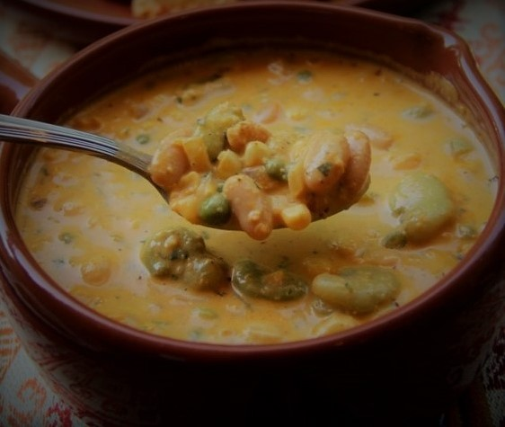
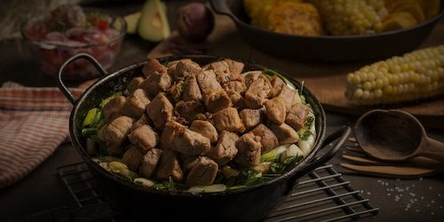
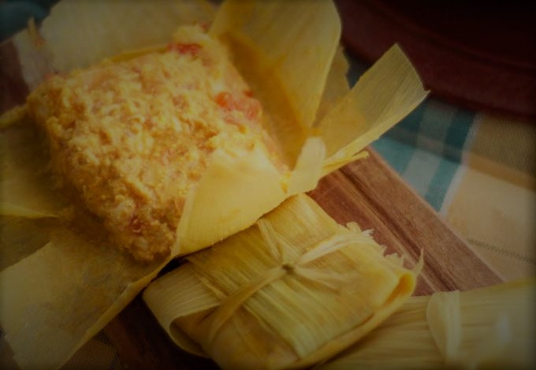
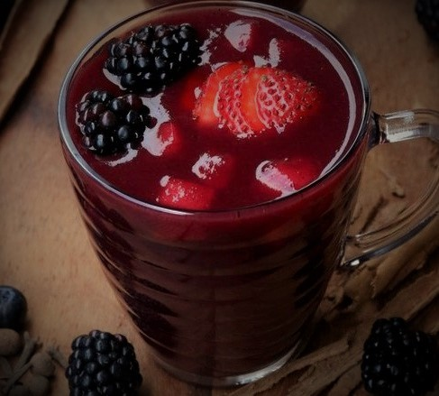

Recetas de la sierra ecuatoriana
FANESCA

Porciones: 10 Tiempo: 75min
Receta de Sra. Carmen, Isla Trinitaria - Guayaquil
Ingredientes
- - Preparar el dia anterior los siguientes granos tiernos:
Choclo, arvejas, habas, chochos , mote y pasta de maní
y los granos secos: lenteja, frejol, melloco, zapallo y zambo. - - Papas
- - Huevo
- - Hiervitas
- - Alineo
- - Pescado seco
- - 3 lts de leche (toda la fanesca de cocina en leche).
Proceso
- Dejar en remojo el dia anterior los granos secos.
- Lavar y sacar las cascaras a todos los granos frescos la noche anterior
- Al zambo, zapallo y melloco pelarlos y picarlos.
- Hervir todos los granos secos por separado
- Remojar el pescado seco en la lecha y dejarlo un rato
- Hacer un refrito en una olla grande y agrgarle de a poco la leche donde remoje el pescado hasta completar 3 lts.
- Agregar al refrito el zambo, zapallo y melloco picado.
- A medida que voy aumentando la cantidad de leche aumento la cantidad de granos que ya estan cocinado y suaves. No dejar de remover nunca y hacerlo preferiblemente con cuchara de madera.
- Si la mezcla se empieza a espezar mucho, agregar un vasito de agua solamente del mismo agua que quedó del hervor de los granos.
- Poner el pescado en el ultimo hervor que doy al final.
- Agregar por último unos cubitos de papas hervidas, huevo duro y hiervita encima antes de servir.
FRITADA DE CHANCHO

Porciones: 6 Tiempo: 35min
Receta de Carmen, Isla Trinitaria - Guayaquil
Ingredientes
- - 4 Tazas de Carne De Cerdo cortada en cubos
- - Mote o choclo
- - Sal y pimienta a gusto/li>
- - 1 diente de ajo
- - 1 rama de cebolla larga
- - Sazon a gusto
- - Ranchero a gusto
- - Maduro
- - 1 cebolla
- - 1 tomate
Proceso
- Lavar bien la carne con limon en un bol y sazonar con sazon y sal, reservar.
- Cocinar en una olla la carne con la cebolla larga, el ajo ranchero y pimienta, un poco de agua, aceite y sal hasta que esté todo bien dorado durante unos 25 minutos.
- Cocinar el mote o el choclo y fritar los maduros
- Servir el refrito de la carne con aguacates, el choclo o mote, los maduros fritos y una salsa curtida del tomate y la cebolla.
LLAPINGACHOS
Porciones: 4 Tiempo: 1h
Receta de Sra Norma, Isla Trinitaria - Guayaquil
Ingredientes
- - Pasta de mani
- - 1 cebolla en corte juliana
- - 1 tomate
- - Lechuga picada
- - Aguacate
- - Chorizo o salchicha una por persona
- - Huevo uno por persona
- - Papas
Proceso
- Hacer un pure de papas, bien majado, agregarle un poco de achiote para darle color, sal a gusto y mantequilla para darle suavidad.
- Hacer con ese pure tortillas de papa dandole forma con la mano y poniendole queso fresco
- Dorar un poco en la sarten las tortillas
- Hacer un refrito de cebolla colorada y cebolla blanca cortada bien finita, 1 diente de ajo bien picado, comino y achiote.
- Licuar la pasta de mani con un poquito de leche y de agua y luego agregar al refrito hasta que este espeso a gusto
- Agregarle al final un poco de cilatro a la pasta de mani
- Picar la lechuga bien fina, cortar en forma de juliana la cebolla colorada, y en cuadrados el tomate. Luego curtirlas con limon y sal y al final ponerle un poquito de aceite.
- Fritar un choriso o cocinar las salchichas
- Hacer un huevo frito
- Cortar el aguacate en tajos
- Servir todo en un plato si desea puede servirse con arroz.
HUMITAS

Porciones: 8 Tiempo: 1h
Receta de Sra Raquel, Isla Trinitaria - Guayaquil
Ingredientes
- - 7 choclos o maíz fresco con las hojas o envolturas
- - 3 tazas de queso rallado
- - 1/4 taza de crema de leche
- - 30 ml de mantequilla derretida
- - 1/4 taza de harina de maíz
- - 4 huevos
- - 1/2 cda de sal
Proceso
- Moler el choco y disolverlo con leche para que no esté tan duro, hacerlo hasta que quedo no muy líquido ni tan duro
- Agregarle después el queso, la sal, la mantequilla y los huevos batidos
- Una vez listo el relleno, envolverlo en las hojas y atarlas
- Por último, poner a hervir las humitas en forma vertical durante 45min/1hs.
COLADA MORADA

Porciones: 5 litros Tiempo: 1h
Receta de Sra Raquel, Isla Trinitaria - Guayaquil
Ingredientes
- - 1 libra de harina morada
- - 10 naranjillas
- - 1 piña
- - 5 o 6 duraznos
- - 1 libra de frutilla
- - Canela
- - Clavos de olor
- - Pimienta de olor
- - 5 clavos de olor
- - Hojas de naranjo o limonero
- - Azucar a gusto
Proceso
- Media hora antes de preparar la colada, remojar la harina y cernirla tres veces para que no haya grumos.
- Hervir las naranjillas licuadas junto con todos los clavos de olor y las hojas de naranjo o limonero durante 10 min; dejar enfriar y por ultimo cernirlo.
- En el agua donde herví los ingredientes anteriores, ponerla a hervir de nuevo y una vez hervida agregar la harina que remojé previamente, y las frutas cortadas en cubo (frutilla, piña y durazno).
- Agregar el azucar mientras se cocina.
- Servir fria con hielo o natural y decorarla con moras arriba.